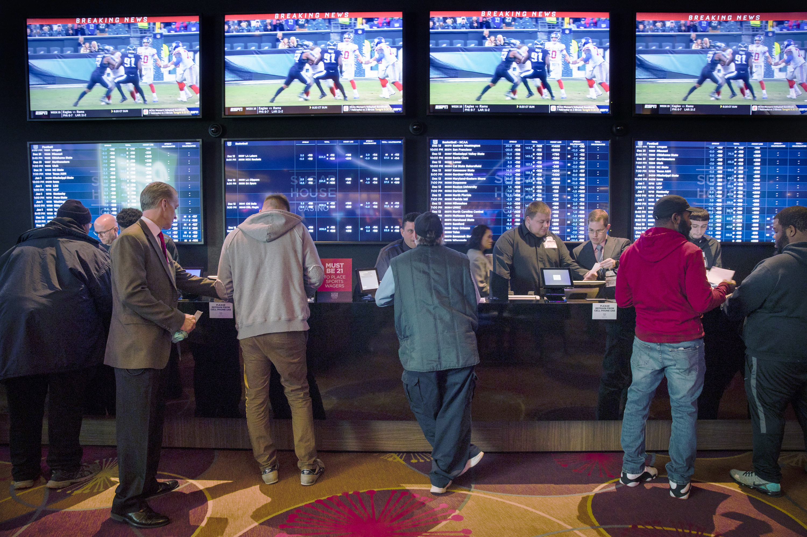

Rescinding the Tickets
The Times spoke with more than 20 people who said they developed gambling problems as they wagered on sports. Most had not done much sports betting until it became legal in their states.
Like Mr. Hummel, a chiropractor, many said they were drawn in by offers of supposedly free money or insured bets. (Most asked for their names to be withheld to avoid negative consequences from employers or relatives.)
They described feelings of exhilaration as they won early on baseball games, soccer matches, even Ping-Pong. The victories were followed by losses that left some thousands of dollars in debt. Yet they remained motivated by the conviction that a few good wagers might be their salvation.
“Gambling is the only mood-altering thing that has hope involved,” said Scott Anderson, a problem gambling specialist in the Department of Mental Health and Addiction Services in Ohio, where sports betting is set to debut in January. “I’m not going to sit in the crack house and hope I can catch up on my child support.”
With marketing gimmicks and other lures, the gambling industry has tried to keep customers coming back. For example, it has dangled supposedly risk-free bets in which customers get refunds if they lose. The catch: The refunded money must go toward new bets.
Every time Mr. Hummel decided to stop gambling, “I kept getting deposit-match offers or free bets,” he said, referring to promotions offering to double what he put into his accounts at the betting sites.
Mr. Hummel even received offers of complimentary sports tickets. In May 2022, resolving to get clean, he used tools on BetMGM’s website to limit his betting. BetMGM then rescinded tickets it had given him to a Washington Nationals baseball game.
“Hi David, unfortunately since you are on cool off right now we will need the Nationals tickets sent back to us,” a BetMGM employee wrote in a text message reviewed by The Times.
Mr. Hummel gave up the tickets — and, with the help of addiction specialists, his months of gambling. (Mr. Taylor of BetMGM said the company “does not feel it is appropriate to provide an incentive or gift to someone it knows may be experiencing an issue with gambling.”)
Yet using sophisticated targeting techniques and artificial intelligence, the gambling industry has continued to pursue countless other customers with offers tailored to their interests and patterns of use.
One strategy is to offer bets that novice gamblers are almost certain to win.
In Michigan last year, FanDuel gave customers the chance to bet that the Detroit Pistons would not lose a game against the Los Angeles Lakers by more than 159 points. The biggest blowout in National Basketball Association history featured a 73-point margin. In other words, this was a sure thing.
The Pistons beat the Lakers by 15 points. FanDuel, an official sponsor of the Pistons, said it shelled out $2 million to the winning gamblers.
It was money well spent: FanDuel signed up nearly 47,000 new bettors who took advantage of the offer. That amounted to a cost of about $45 for each new user — a bargain in the hypercompetitive gambling market.
Jack O’Donnell, a longtime casino executive, said such promotions were a high-tech reboot of the $50 vouchers he and others used to hand to busloads of people who took day trips to casinos.
But Mr. O’Donnell, who has become a critic of the industry, said the tactics were problematic in the digital era. “It makes gambling look easy,” he said. “The only difference is that the online companies are luring bettors through their phones while sitting on their couch.”

An Advertising Free-for-All
Gambling companies have carpeted social media, stadiums, billboards and airwaves with advertisements plugging their risk-free bets and other promotions. From January to October 2022, sports-betting platforms bought more than a quarter of a billion dollars of ads on national television — nearly four times what they spent in all of 2020, according to iSpot.tv, which tracks television ads.
The commercials — featuring Hollywood actors and Hall of Fame athletes — are so ubiquitous that the comedian Conan O’Brien quipped this year that he had not seen a sports-betting ad “in almost 7 minutes. Am I dead?”
(The Athletic, a sports website that The Times bought this year, has a partnership with BetMGM. The Athletic uses BetMGM data in certain content, and BetMGM promotes The Athletic’s articles and subscription offers to its customers, a Times spokesman said.)
Some state officials have grown worried about the nonstop ads and the extent to which betting has become enmeshed with American sports.
“Are we crossing that line where the leagues are suggesting that, ‘Hey, if you really want to enjoy this game, let’s bet on it?’” said Christopher Hebert, the head of the gambling division in the Louisiana attorney general’s office.
Yet in Louisiana and many other states that The Times surveyed, there are few if any restrictions on the volume or placement of ads, and even fewer instances of regulators punishing companies for violations.
The gambling industry has argued that such restrictions would be counterproductive.
In Massachusetts this year, lawmakers were preparing to vote on a bill legalizing sports betting. A provision prohibited ads during games. The American Gaming Association, the main group representing the gambling industry, warned in a letter that the restrictions would “strengthen the competitive advantage enjoyed by illegal betting operations.” The state’s sports teams, and the television networks that aired their games, also opposed the ban.
The so-called whistle-to-whistle ban was not included in the version of the bill that the Massachusetts legislature passed. No other states have enacted such prohibitions, either.
Instead, the gambling association has introduced its own “Responsible Marketing Code,” which officials have said was partly intended to fend off stricter government oversight. The voluntary rules include not marketing to underage audiences and not promoting “irresponsible or excessive” betting.
The marketing code is enforced by a division of the gambling association and a board composed of gambling executives and officials from the University of Nevada, Las Vegas, which has close ties to the industry.
Since the creation of the enforcement process, the association has received a single complaint about a violation. There were no penalties.
Slap on the Wrist
Other countries have been much more aggressive about trying to protect consumers, including by more strictly regulating advertisements.
In the United Kingdom, for example, hundreds of thousands of people developed gambling addictions after years of unbridled promotion of sports betting. The government now prohibits gambling ads during games and certain celebrity endorsements of sports betting. It also banned the use of credit cards for gambling, something that is allowed in at least 15 American states.
Spain, Italy and Australia also restricted ads, promotions or endorsements. In Ontario, which this year became Canada’s first province to allow sports betting, the government outlawed advertisements of free bets and other promotions. Within months, companies including DraftKings and BetMGM were penalized for breaking the law.
Only a handful of states, including Arizona and New York, review ads before they go live, according to the Times survey of regulators.
In New Jersey, where online casino gambling had been allowed since 2013, regulators initially reviewed all advertisements in advance. After two years, though, they gave up because the volume proved overwhelming, said David Rebuck, the state’s top gambling regulator.
New Jersey experienced a flood of sports-betting ads from overseas companies that left Mr. Rebuck thinking that they “didn’t understand that we have consumer protection laws.” But he said he could not recall the state ever having formally disciplined a company for problematic sports-betting ads. His office’s philosophy was to initially educate companies about the rules rather than issue public reprimands, he said, calling it a system of “progressive discipline.”
The Times identified only one instance of a state punishing a sports-betting company for a false or deceptive ad. It came after Penn Entertainment, the parent company of Barstool Sportsbook, alerted Indiana regulators to a promotional video for the betting platform in which someone minimized the risks of losing money.
Penn and Barstool agreed to pay Indiana $17,500 in fines — a slap on the wrist for a company like Penn with nearly $6 billion in annual revenue.
‘Not the Gestapo’
In a gray room in an Iowa casino, the state’s five gambling commissioners cruised through their monthly meeting in under an hour. For four minutes, two sharply dressed executives from Caesars Entertainment stood to receive their punishment.
The casino company had accepted more than $200,000 of online deposits from customers drawing on credit cards. That violated a state law that was intended to make it harder for people to go into debt from gambling.
The commission in August imposed a $60,000 penalty on Caesars, whose revenue last year was nearly $10 billion. FanDuel had paid similar penance in July, and several others would do so in the coming months. The gambling companies used the same outside payment-processing firm, which they said was to blame.
The idea was not to shame companies as much as to offer them gentle reminders to be more careful, said Brian Ohorilko, Iowa’s top gambling commissioner.
“A big part of what we do is voluntary compliance,” Mr. Ohorilko said. “The focus is making sure that the facilities are doing their jobs and not so much us actually running down every situation.”
At least one commissioner questioned whether the punishment was sufficient. “It just seems these types of infractions are becoming more and more common,” Amy Burkhart told her colleagues at the meeting.
The commission is now in the process of considering whether its penalties need to be tougher to serve as stronger deterrents.
Like Iowa, Tennessee also forbids the use of credit cards to fund sports-betting accounts, and similar violations occurred there, according to Mary Beth Thomas, the state’s top sports-betting regulator.
Tennessee did not pursue any disciplinary actions. Ms. Thomas said the gambling companies had developed plans to ensure such violations would not reoccur. “This is a new industry,” she said.
That forgiving attitude was common, The Times found. Some regulators noted the difficulty gambling companies faced as they navigated a state-by-state thicket of rules. “When you’re doing business in 30 states, for example, it takes a while to figure out who does what,” said Ronnie S. Johns, chairman of the Louisiana gambling control board.
When several companies in Louisiana ran advertisements without including the phone number for a gambling help line in the minimum font size, the state did not impose punishments.
“We just took a common-sense approach,” Mr. Johns said, adding that the state informed the companies of the errors, and they updated the ads. “We’re not the Gestapo.”
Some states have had little choice but to show deference. Lawmakers allocated minimal funding to oversee sports betting and assigned that oversight to state bureaucracies — such as lotteries, horse racing authorities or casino commissions — that previously had narrower responsibilities.
“These agencies do not possess the appropriate human resources and knowledge” to police cutting-edge international companies, said Richard Schuetz, a former casino executive and regulator. “I am not optimistic that the regulatory agencies can catch up.”
The combination of limited resources and a desire to maximize gambling tax revenue has led to a shift in the ways that many regulators license gambling operators.
For decades, regulators in states like Nevada and New Jersey have conducted intensive reviews of the people and companies that wanted to offer gambling, a process intended to fend off organized crime and protect the industry’s reputation. Applicants for gambling licenses often have had to submit tax returns and fingerprints, and even explain scars and tattoos.
Today, at least 12 states, including New York, have fast-tracked the licensing process. After collecting basic information and running background checks, they grant temporary permits, which allow gambling companies to begin accepting bets months or even years sooner than if they had to wait for a full review.
“You can do some checks to make sure somebody is on the up and up and then do a full background certification after that,” said Todd Allen, a top sports-gambling regulator in Kansas.
In Colorado, state auditors conducted a random review of five of 19 temporary licenses the state had awarded. Among other lapses, they found that Colorado had no record of running the required criminal background checks.
As of March 2022, nearly two years into betting in Colorado, 35 of 39 companies were still operating with temporary licenses.
“Once licensed, the division largely trusts operators to self-regulate,” an auditor, Annalisa Triola, told lawmakers in Denver this summer. As a result, she said, it was critical to vet the companies thoroughly in advance.
Mr. Hartman, the top regulator in Colorado, said that even light regulation was better than what existed in the black market and that he was proud of his commission’s work.
The industry has celebrated states that have taken a friendlier approach. At a conference in Las Vegas in October, a group called the International Masters of Gaming Law handed out an inscribed glass trophy to its North American Regulator of the Year.
The award went to Mr. Hartman.
Fending for Themselves
Gambling companies have opposed tougherprotections for customers.
The American Gaming Association fought federal legislation in 2018 that would have created a national self-exclusion list, in which customers can block themselves from gambling on every app. The list was to be overseen by a new federal commission with a budget to fight gambling addiction.
The gambling association called the bipartisan bill “unnecessary federal engagement” in matters better left to states and the gambling industry. The bill died in committee.
Last year, the U.S. government didn’t allocate any money to prevent or treat gambling addiction, and states set aside a total of $94 million, according to a group that represents state employees who oversee such funds. That was 0.3 percent of what state and federal governments allocated for substance abuse.
One result of the industry’s lobbying is that those at risk of addiction have often been left to fend for themselves. Some of the people who spoke to The Times said they had not known where to turn for help. Even when they did — by, for instance, using software that prevented them from accessing gambling websites — the tools were not foolproof.
At least 17 states maintain databases of people who have asked to be blocked from gambling. But the states often leave it up to betting companies to download and abide by updated versions of the lists.
Other states require sports-betting companies to maintain their own self-exclusion lists, and companies have resisted sharing them with competitors or regulators.
Before sports betting began in Indiana, the state created a website allowing people to block themselves. Yet 117 people who enrolled were allowed to create accounts with DraftKings, according to the state’s gambling commission.
Twenty-eight of those people ended up wagering a total of more than $731,000.
Asked about those failures, Stephen Miraglia, a spokesman for DraftKings, invoked the company’s “industry-leading approach” and said: “Nothing is more important than providing a safe experience for our customers.”